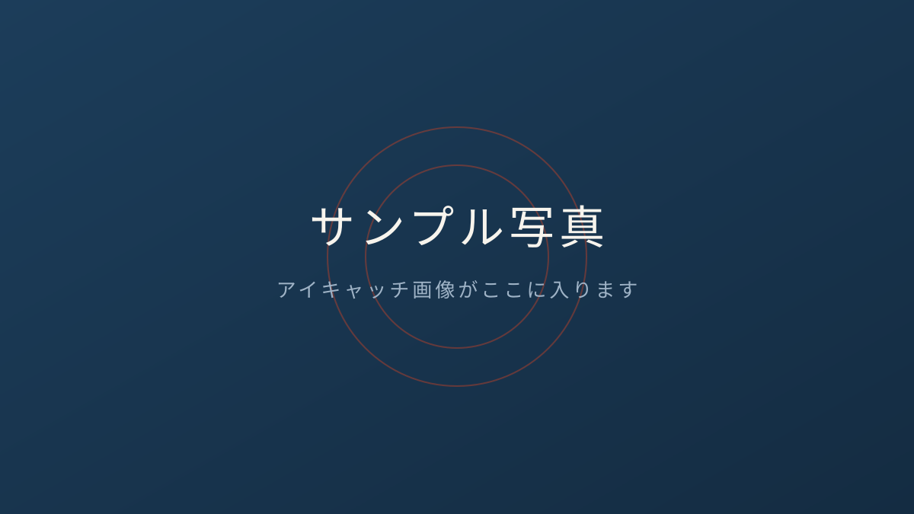

夏休みの家庭学習、「計画表」より先に決めるべきこと
夏休みが近づくと、面談で必ず聞かれる質問があります。「計画表を作らせた方がいいですか？」——答えは半分イエスで、半分ノーです。
計画表が三日坊主で終わる理由
多くのご家庭の計画表は「9:00〜10:00 数学」のように時間で区切られています。ところが子どもは、開始時刻を1回過ぎただけで「今日はもう崩れた」と感じて、その日全部をやめてしまいます。大人のダイエットと同じです。
時間ではなく「行動」で決める
当塾でおすすめしているのは、時間割ではなく行動の順番で決める方法です。
- 朝ごはんのあと、ワークを2ページ
- 昼ごはんの前に、昨日の丸つけ直し
- 夜は塾の宿題だけ
開始時刻を決めないので、崩れようがありません。「何時にやるか」ではなく「何のあとにやるか」。これだけで続く子が目に見えて増えます。
塾からのお願い
夏期講習に参加される方は、初回に「夏の行動リスト」を一緒に作ります。ご家庭では、リストの中身よりも「できた日に一言ほめる」ことだけお願いします。
ご相談はお問い合わせフォームからどうぞ。
お子さまの学習のご相談は、
無料体験・面談からどうぞ。